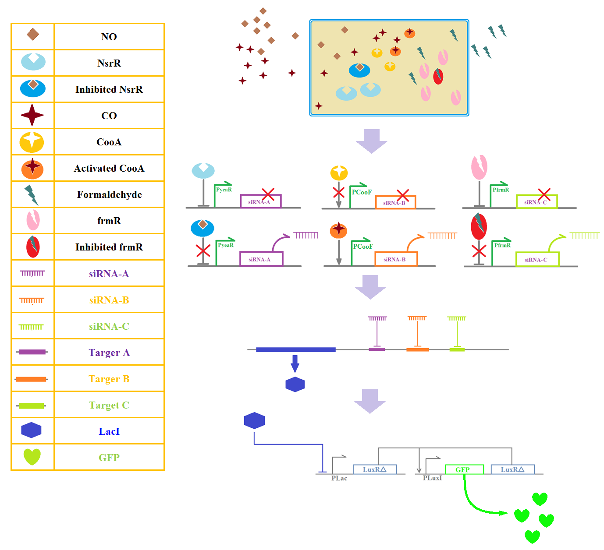

Indoor air pollution, as the most serious problem that affects our health, could be extremely harmful to human, especially pregnant women. A major source is second-hand smoke. In this report, we proposed a novel biologic monitor to detect second-hand smoke by testing three of its mostly harmful contents: carbon monoxide (CO), nitrogen oxide (NO), and formaldehyde. The proposed design consists of synchronous detecting for all three gases. Once any of them enter the indoor environment, the proposed sensors could recognize and generate a signal, which will then be transmitted to the amplifier to rise the system sensitivity. The final amplified signal will be reported by green fluorescent. This second-hand smoke detector can rapidly report the existence of smoke by synchronously sensing three components. Introducing bio-amplifier into the system also increases the preciseness.
